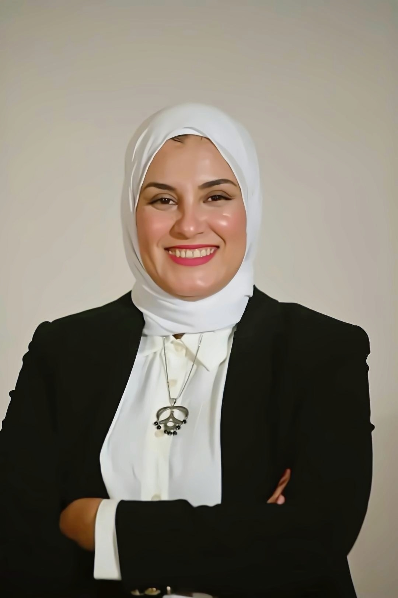

Passionate sports media professional with extensive experience in broadcasting, reporting, interviewing, and content creation.
Years Experience
Media Organizations
Sports Reports
Interviews
I am a Sports Journalist, Radio Presenter, and Educator with years of experience in sports media, radio broadcasting, and audience engagement. Alongside my media career, I have worked in education, developing strong communication, leadership, and presentation skills.
Kafr El-Sheikh Higher Institute of Social Work
Grade: Very Good
Maadi, Cairo, Egypt
+20 1093320135
nonahosseiny@gmail.com